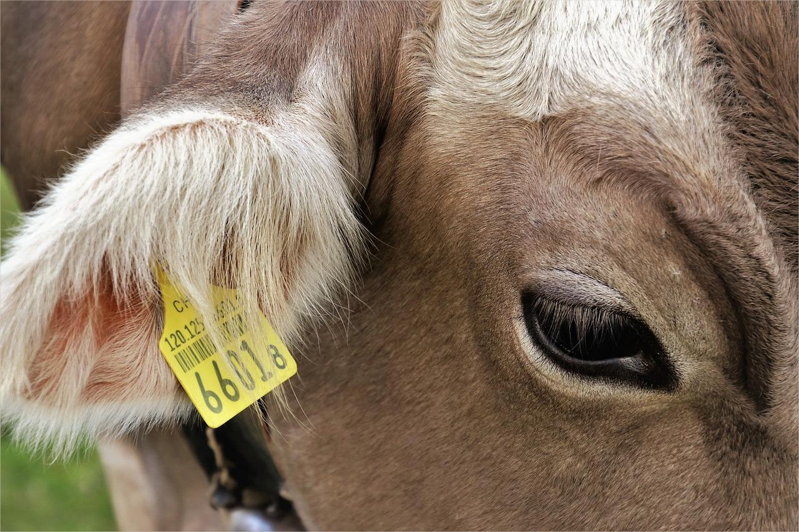
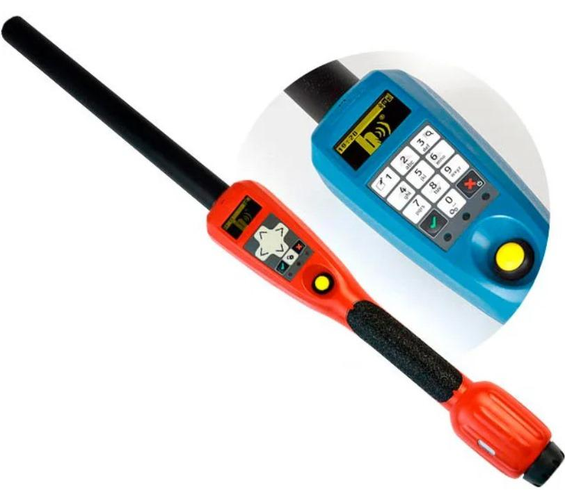

O irrigador automático facilita o trabalho do agrônomo, que não
precisa se preocupar em acioná-lo devido ao seu sistema ser
automatizado, e auxilia na economia, pois o sistema mensura qual é a
quantidade diária de água que deve liberar na plantação, evitando
desperdícios.


Brinco Eletrônico para Gado
Um brinco que é capaz de armazenar as informações sobre a saúde do
animal, como peso, histórico de vacinação, reprodução, entre outros.
Temos disponíveis nas cores amarela e verde. O produto tem 38x46mm,
diminuindo ao máximo o desconforto ao animal.